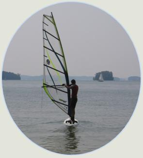
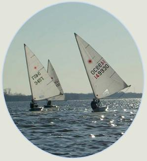
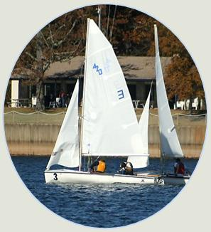
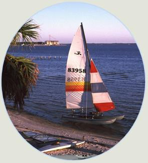
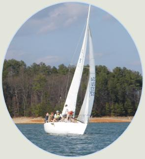
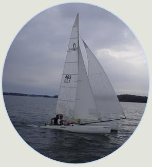

|  |
Windsurf FleetWe have a huge inventory of windsurf boards and sails. These are the fastest watercraft we own and the most versatile. They can be sailed in almost no wind and when the wind is moving in excess of 30 knots. We have 6 Mistral longboards designed for beginner to intermediate windsurfers along with various shortboards for advanced windsurfers. We bring our boards with us on all our Florida trips and offer an Options class in the summer and fall to teach windsurfing. |
Laser FleetLasers are 14-foot, single-handed dinghies. They are an olympic class of boat - very competitive and maneuverable. We have seven laser hulls with full rigs for all of them along with several radial rigs. There is a highly competitive laser racing series and laser sailing community at Lake Lanier that many of our members enjoy. We also sail them recreationally, bringing one or two with us on Flordia trips. |
 |
|  |
420 FleetJust a few short years ago, we acquired 6 brand new, matching 420s. These are two-handed dinghies sailed in intercollegiate racing. Our raceteam uses this fleet to practice and host regattas. We also use them to teach an Options class for anyone interested in learning to sail. |
Hobie 16 FleetAfter purchasing two new Hobie's a couple years ago, we now have 4 of these double-handed catamarans. These boats are the essence of fun and widely recognized as the world's most popular catamaran. We bring them on every Florida trip, sailing them off the beach. We also sail them competitively in a lively multihull racing circuit around the Atlanta area. Our club members have made the covers of sailing magazines in these boats and regularly place in the top tier of local regattas. |
 |
|  |
J-24 FleetJ-24 is a 24 foot long keel boat that requires 4-5 people as crew. We have two of these large boats - 'J-Express' and 'Helluva Boat'. Since they hold so many, they are great for recreational sailing trips around the lake; we take them out every week during the summer. We also race them year-round in regattas and racing series (such as the Wednesday Night Race Series hosted by AISC, which we won with 'Helluva Boat' in 2009). |
Other EquipmentIn addition to our one-design fleets, we also keep a handful of other types of watercraft. We have a zodiac (inflatable power boat) which we use as a chase and rescue boat. We have several different types of catamaran, including a Nacra 5.5 and a Prindle. In addition, we received a Santana 20 - a beautiful racing class keel boat named 'Tigger' - as a donation in the fall of 2009. |
 |